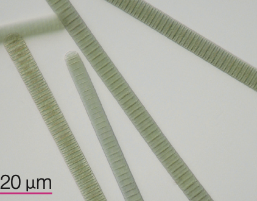
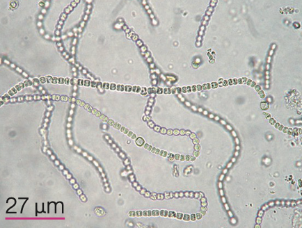
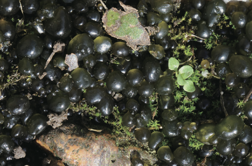

可行光合作用的細菌―藍綠菌
另外有些原核生物細胞內雖不含葉綠體，但含有葉綠素和其他色素，可吸收光能進行光合作用製造葡萄糖，例如 藍綠菌（又稱藍綠藻、藍菌）。
Q1：下列哪些名詞與「藍綠菌」是通用的同義詞？（多選）
Q2：請勾選出「藍綠菌」具有的所有特徵：
藍綠菌家族大集合
藍綠菌有許多不同的種類與外觀，請根據課本描述進行配對！
Q3：請為下方的藍綠菌圖片選擇正確的名稱：

左右擺動或滑動運動，會顫動的絲狀藻

細胞呈現珠狀排列，像一串珠子

外觀球形，外面包覆有色膠質外層
Q4：綜合以上知識，下列哪些生物可以行光合作用呢？（多選）
雨後冒出的美味：雨來菇
「雨來菇」是一種可食用的藍綠菌，其實它是念珠藻的集合體。它們常在雨後短暫出現，因為長得像是菇類（真菌），才被俗稱為雨來菇，是一道常見且營養的在地食材喔！

Q5 綜合評量：階層分類俄羅斯娃娃
請將下方的生物字卡點選並放入框中！
規則：大包小！必須先放入最大的分類階層（界別），接著放「類別」，最後才能放入「特定生物」喔！放錯順序會被彈回。
原核生物界
細菌
藍綠菌
乳酸桿菌
瘤胃球菌
念珠藻
雨來菇
⬇️ 請依序點擊上方字卡，放入下方的對應階層 ⬇️
第一層：請放入最大的「界」
分類完全正確！太強了！
透過這個圖表，你已經完全掌握「原核生物界」的從屬關係囉！
第三站重點整理
- 細胞特徵：無葉綠體、無細胞核，但含有葉綠素與遺傳物質，可行光合作用。
- 通用名稱：藍綠菌 ＝ 藍綠藻 ＝ 藍菌。
- 常見種類：
- 色球藻（球狀，有色膠質外層）
- 顫藻（絲狀，會顫動滑行）
- 念珠藻（珠狀排列）
- 生活應用：雨來菇是念珠藻的集合體，外型像菇類（真菌），但其實是可食用的藍綠菌。
- 生物階層：原核生物界主要包含「細菌」與「藍綠菌」兩大類別。